1922 Thirst Know No Season
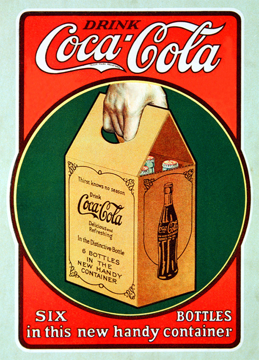
1924
1925 Six Million A Day
20세기 중반쯤엔 텍스트의 비중이 높아졌다.
인물 모델이 아닌, 코카콜라 병의 이미지로
직접적인 콜라 광고를 하였다.
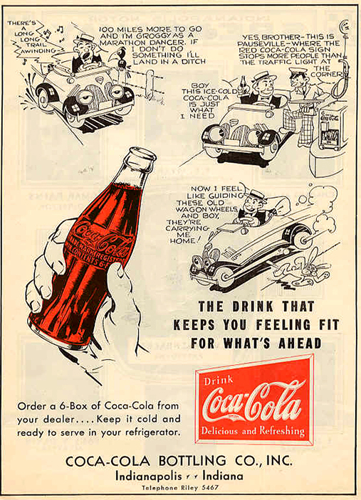
1927
Around The Corner From Everywhere
1929
The Pause That Refreshes
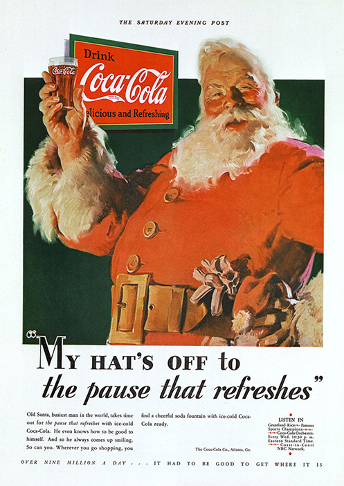
1931
1932 Ice Cold Sunshine
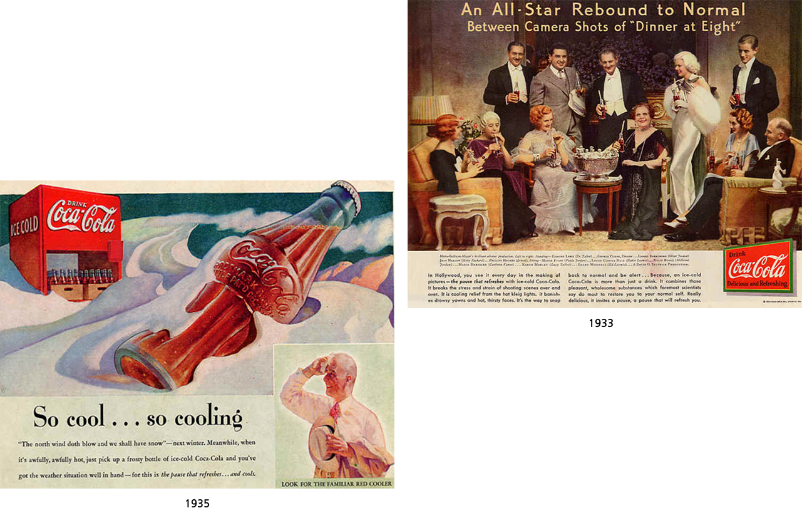
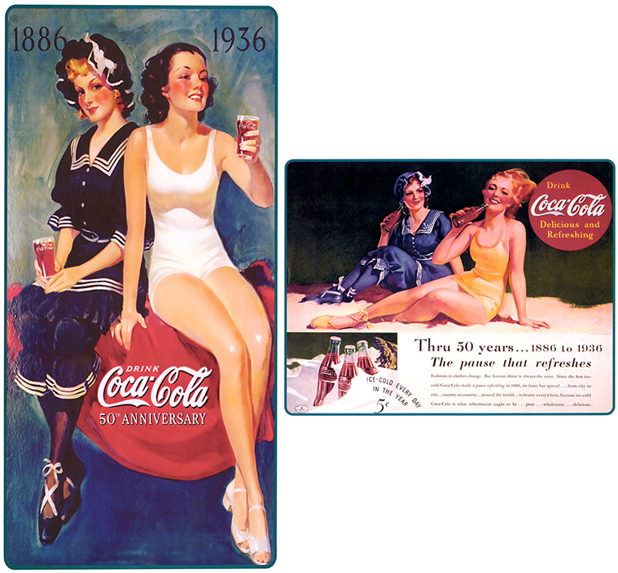
1936
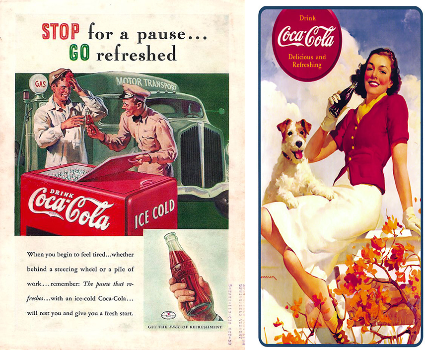
1937
1938 The Best Friend Thirst Ever Had
1939 Coca-Cola goes Along
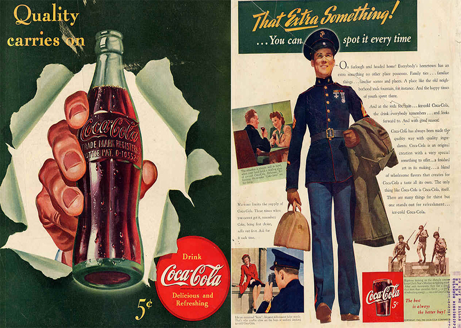
1942 The only Thing Like Coca-Cola is Coca-Cola Itself
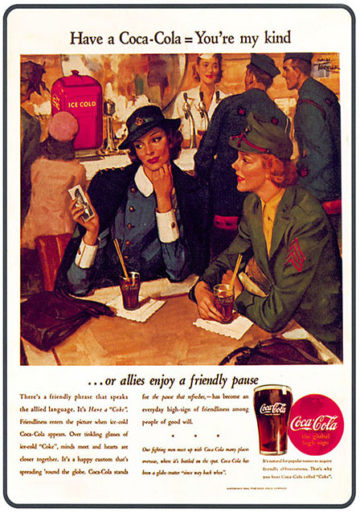
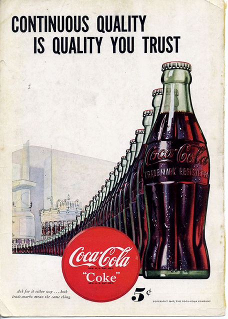
1947
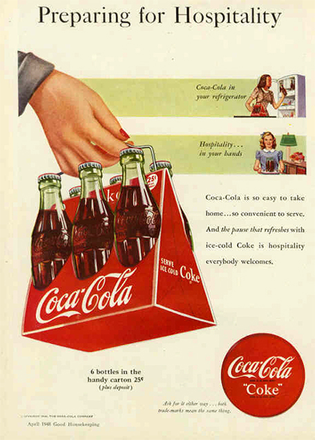
1948 Where There's Coke There's Hospitality
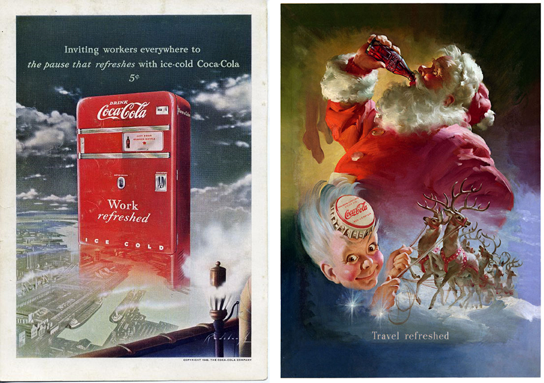
1949
Coca-Cola.. Along the High Way to Anywhere
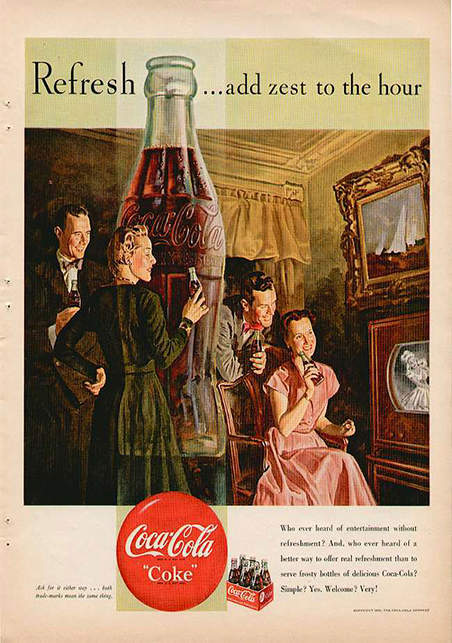
1950